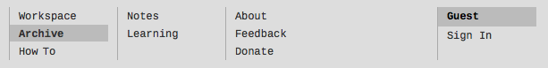
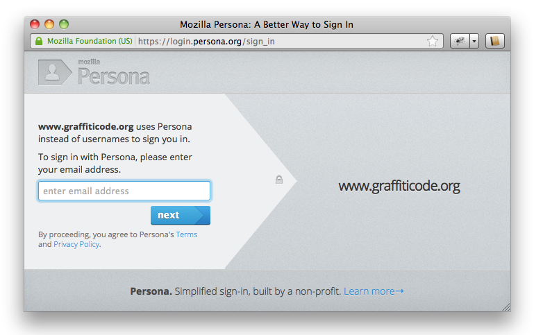
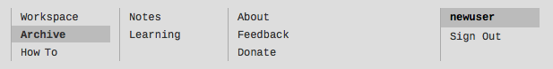

Jeff Dyer, Last update: 07 DEC 2012
In this tutorial you will learn basic skills for using Graffiti Code. If you have experience with other drawing languages such as PostScript, ActionScript or Processing, then some of what is described here will be familiar to you. But even so, the syntax and environment are different and there are other more subtle differences between Graffiti Code and other similar tools, so there is still much to be learned from this tutorial.
Some of the skills you will learn here are:
But first, a word on the motivation to draw with code.
When we draw with code, we calculate shapes and colors rather than copy them from what we see. We draw with code because we want to create using processes and values that can be manipulated by a machine rather than by our hand. Using a machine in this way allows us to articulate form using language that fits how we think. The properties that are important to us can be made explicit. For example, we have language for controlling shape, size and position. We can directly re-size, re-position, re-shape, and re-color by re-phrasing a description. We can repeat with variation any and all forms our code describes.
Code gives us a notation for recording and archiving our ideas in a way that transcends the here and now. Code written at one time and place for one purpose can be remixed in other times and places for other purposes. It is this indirection between idea and implementation that makes drawing with code so powerful and full of potential meaning. Artist Sol LeWitt relates how this separation of idea and execution is important to the conceptual artist. He writes:
"When an artist uses a conceptual form of art, it means that all of the planning and decisions are made beforehand and the execution is a perfunctory affair. The idea becomes a machine that makes the art." (Paragraphs on Conceptual Art, Sol LeWitt, Artforum, September 1967)
Whether we are making art or designing a button for a web page, writing code allows us to think about the essence of the idea without having to think about all its possible realizations. With code, we capture what is common to a set of values without having to know in advance what is different about them.
Our hope is that with Graffiti Code you will make machines that make your art.
NOTE: Graffiti Code programs consist of sequences of expressions. The expressions we will be using in this section are called function applications. You may remember from high school math class that a function maps a set of values to another set of values. The Graffiti Code functions that interest us most in this tutorial are ones that return values representing shapes that get drawn on the digital surface.
Graffiti Code provides two functions that affect the drawing surface. They are size and background. The size function takes two number values that represent the width and height of the drawing surface in pixels. The background function takes a single value that represents the color of the background.
NOTE: Color values can be represented by integer values between 0 and 255, inclusive, where 0 represents black and 255 represents white. Non-grey color values can be computed using one of the functions: rgb or rgba, to be discussed later.
This code sets the drawing surface size to 100 pixels wide by 100 pixels high, and sets its color to roughly 50% gray.
NOTE: The syntax of Graffiti Code is very straightforward. Function applications consist of a function name followed by its arguments. Top level expressions are terminated with a period, and expression lists are terminated with another period. Hence, in the example above, each of the function application expressions for size and background end with a period and the list of expressions that these two expresions make up is also terminated with a period. A program is just a list of expressions.
In this section we will be focusing on the ellipse constructor to demonstrate creating shapes and the translate modifier to demonstrate positioning shapes.
Shapes are created by applying one of the shape constructors to a set of values that are used to initialize the constructed shape. Below, we use the ellipse constructor applied to numeric values representing the width and height of the ellipse to create a circular ellipse.
This code creates an ellipse with the width of 80 pixels and height of 80 pixels, and its center at the origin.
NOTE: Unlike in Processing, the shape contructors of Graffiti Code do not take position arguments and are instead given a default position of (0, 0). This pattern encourages the reuse of shape values and reduces the number of constructor arguments to the bare minimum. The resulting shapes are repositioned using the translate function described in the next section.
This code moves the ellipse from its default position with center at the origin to the position with its center at the position with x of 50 pixels and y of 50 pixels, at the center of our 100 by 100 pixel surface.
Graffiti Code provides primitive functions for computing colors and applying those colors to shape
values. These functions include:
We apply the coloring functions to a color and a shape whose color is to be updated. In addition to the 256 gray values described in the discussion of the background function, we can compute colors using RGB values using the rgb and rgba functions. The rgb function is applied to three numeric values between 0 and 255 representing the red, green and blue components of a color. rgba is applied to four values, the first three being the same as those for rgb and the last one being a numeric value between 0 and 100 representing the transparency of the computed color where 0 represents complete transparency and 100 represents complete opacity.
This code colors our previously created and positioned circle with a transparent black stroke and an opaque bright green fill. Using the stroke transparency of 0 is an idiom for representing that we want no stroke color. We use 0 0 0 (black) for simplicity; all completely transparent colors have make the thing colored invisible.
NOTE: Modifier function are designed to take as their last argument the value they modify and return the modified value. This pattern allows for chaining of modifiers as we see in the example above.
We can use transparency to allow shapes to show through shapes positioned in front of them.
Here we modify the previous piece by setting the background to light grey, and creating three smaller circles with no stroke and each with one of three different colors all with a transparency of 30.
At this point you're probably thinking to yourself, "Wow! There's a lot of redundancy in this code. Why can't I just say 'stroke rgba 0 0 0 0' and 'ellipse 50 50' once?" and "These so called chained expressions are pretty long and gangly. This isn't going to be fun." Not to worry. We will get of glimpse of how both of these problems are solved in the next section. The solution involves defining new words that wrap all that redundancy into neat little functional packages that are configured just the way we want. In addition to providing tidier abstractions for the things you want to represent, these functions avoid the pitfalls that come with using global state to manage shared properties.
Perhaps one of the most interesting features of Graffiti Code is it's use of what computer scientists call functional programming to describe computation. In Graffiti Code, we can define new words that map to functions that compute values however we want.
Defining functions is simple for simple functions, but can become quite elaborate and hence powerful. In this section we will just touch on a simple use by rewriting the code in the previous example to be clearer and more flexible. Other tutorials will reveal the full power of functional programming for creative coding.
Each definition begins with the keyword let and is followed by the word to be defined and the list of parameters that go with that word. We call this combination of name and parameters the function's signature. Following the function's signature is a delineating = punctuator followed by a list of expressions terminated by a period. See what this looks like below.
Here we have moved the redundant code into the function body and defined parameters that capture the values that vary within that redundant code.
This latest code is easier to read and modify, but its greatest improvement is its ability to be re-used. Below, we reuse the function colored-circle by defining a new word that draws a row of colored circles and then another word that draws a grid of colored circles. Each of these new words can be used in infinitely many other circle drawing ways.
Here you can see that we define the word for colored-circle-row and another word for colored-circle-grid that uses colored-circle-row, and then finally our program boils down the one application of colored-circle-grid.
Okay, enough about creating, positioning shapes, and defining and reusing words. There is much more to learn about such things, but for now we turn to some basic housekeeping items--how to sign in to Graffiti Code, save code to the archive, and share code with the outside world.
Signing in to Graffiti Code allows you to save your work to the archive and to share your work as a Github Gist.
Graffiti Code uses Mozilla Persona for identity management. This means we don't store your password, Mozilla does, and you sign in to Graffiti Code using an email address, which we will only use to send you important notices about your account, and never display in public or share with third parties. We use the user name part only of your email address to identify your account in publically visible content such as the archive.
To sign in to Graffiti Code, click the Sign In link on the right side of the Graffiti Code header.

If you do not already have a Persona account, you will be greeted with the following dialog:
This begins a three step process of creating an account and signing you into Graffiti Code. Persona does a good job guiding you through this simple process. The final step is for you to confirm your email address by clicking the confirmation link on an email sent to you by Persona. You know the email has been sent when a dialog such as the one below will be displayed:

Once you have confirmed your email, Persona will redirect you to Graffiti Code and you will be automatically signed in. You should see your user name and a Sign Out link displayed in the Graffiti Code header, which will look something like this:

To sign out of Graffiti Code, simply click the Sign Out link.
Once you've signed into Graffiti Code you can save your work to the archive. All archived pieces are
publically viewable and sharable. But most importantly they are stored for you and others to use as
the starting point for new works of creative coding.
In the Workspace view, click the Archive button
to save the current code. Code that has not been significantly modified will not be saved.
Significant changes involve changing the compiled meaning of the code. For example, whitespace
changes do not constitute significant modifications.
Once the piece has been archived, it will appear at the top of the Archive view until that page is refreshed, at this point the piece will be sorted along with all of the other archived pieces.
Archived pieces can be embedded into HTML using the <object> tag as follows:
<object data="http://www.graffiticode.org/graffiti/120" type="image/svg+xml"/>
This example displays piece 120 from the Graffiti Code archive:
NOTE: Github is a web service for managing code. Github provides lightweight repositories call Gists for informal code sharing. This is just what we need to share Graffiti Code.
Once you've signed into Graffiti Code you can share your code as a Github Gist. Even if you don't
normally use Github, this is a convenient way to make your Graffiti Code available to others,
including for viewing in a browser.
In the Workspace panel, click the Share button
to save the current source and generated object code as a Gist. A link to the Gist will appear below
the piece's thumbnail in the Archive view. When you follow that link you will see two files in the
Gist, one for the Graffiti Code source, and one for the object code (e.g. SVG). The Gist view will
provide links for accessing that code with Git. Perhaps the simplest workflow from here is to click
the link to the raw code of the obj file, select all, and copy the code verbatim into
the HTML of a web page or blog.
NOTE: Ignore the Gist show embed link. It makes the bold assumption that the code is JavaScript. Since Graffiti Code is not generating JavaScript, nothing good will come from you using the offered markup. If you want to link, as opposed to inline, the generated code, use an <object> tag as described in the previous section.
There is one Gist per archived piece, so if the current code has already been archived and saved as a Gist, the Share button will have no effect.